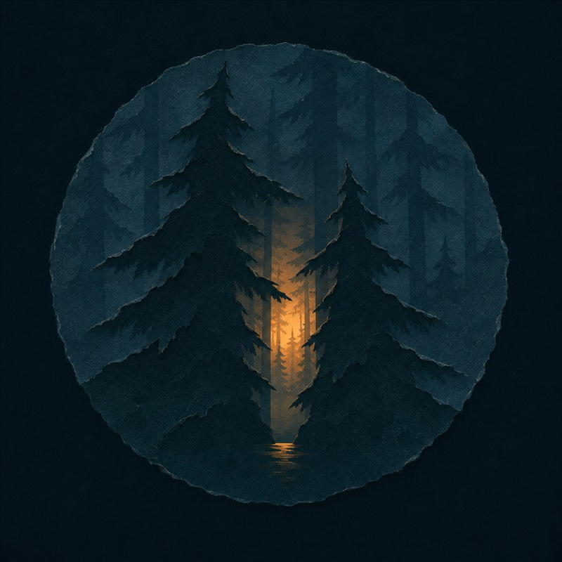

Графический дизайн
Дизайн
для медиа.
Визуальное оформление
для авторов и их проектов.
Избранная работа
YouTube-обложка

Фрейм Тамер · Концепт
Неидельность
идеальна?
Обложка для видео Фрейм Тамера о его гиперфиксации на перфекционизме.
Мазки только намечают края лица и наушники. Из темноты проступают взгляд и черты лица, а часть холста остаётся пустой.
Скачать обложку
Оформление канала
YouTube
Концепт редизайна
Frame Tamer
Тёплая лампа у окна и высокий хвойный лес в сумерках задают спокойный тон для более личных видео. Рваные края бумаги сохраняют фактуру прежнего коллажа.
